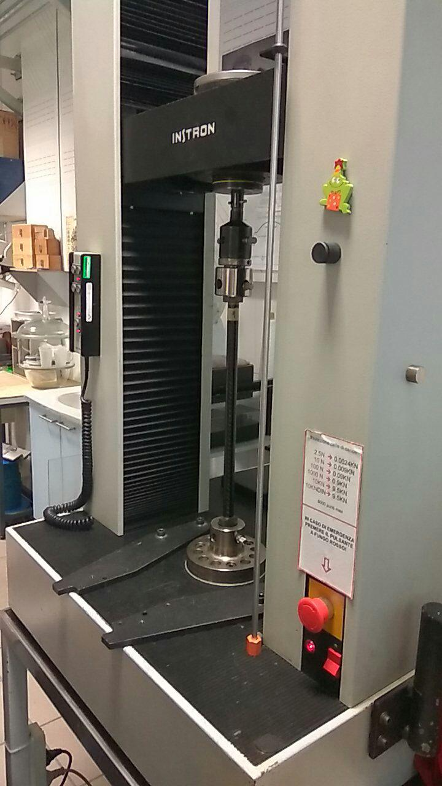
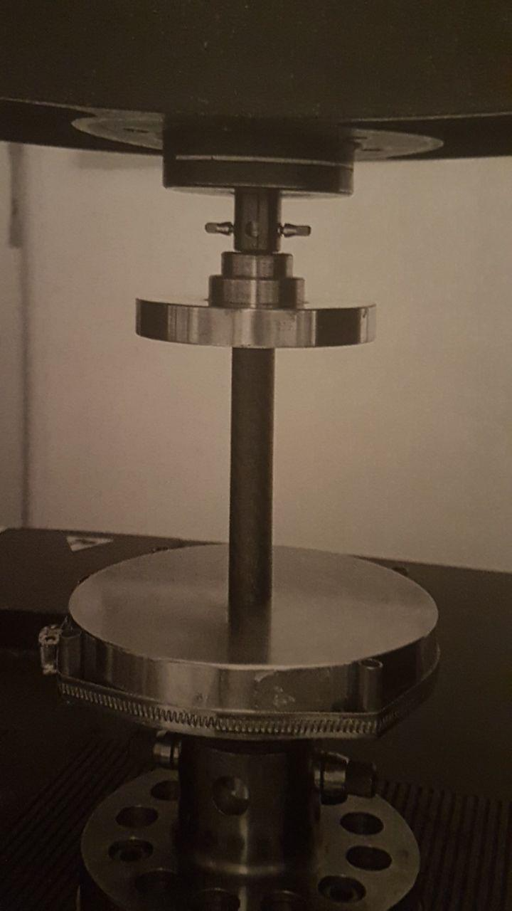
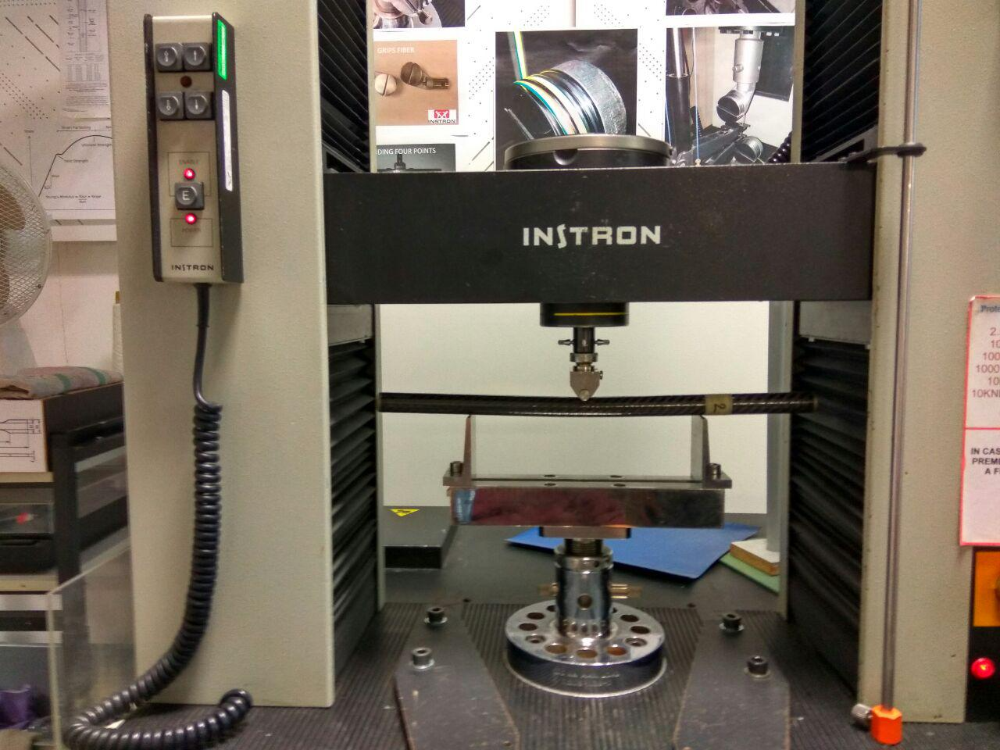
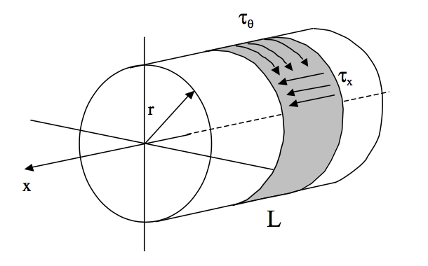

Suspensions of Chimera Evoluzione¶

Anti-Roll Bar¶
1. ARB Assembly¶
Figure 1: Anti-roll bar, stiffest configuration.
Assembly of the anti-roll bar in its stiffest configuration.
Figure 1: Anti-roll bar, stiffest configuration.
2. Bill of Materials¶

Component: Nylon Bar Material: Nylon Quantity: 1
Component: Joints Material: Aluminum 7075 Quantity: 2
Component: Blades Material: Aluminum 7075 Quantity: 2
Component: Rods ends (6mm) Material: Steel/Iron Quantity: 4
Component: Rods Material: Aluminum 7075 Quantity: 2
Component: Bushings Material: PTFE Quantity: 2
3. Static verification of the ARB¶
The stiffness of the anti-roll bar can be tuned by changing the orientation of the blades. The most critical condition for the blades is when the angle between the normal to the external face of the joint and the normal to the larger face of the blade is equal to 90°. Both the softer configuration and the verification results are shown below. The static verification was set up imposing a displacement of 15.58 mm, which is the maximum wheel travel allowed when the anti-roll bar is mounted on the chassis. Since the ratio between the vertical displacement of the wheels and the rocker motion is 1, the displacement of the tip of the blades corresponds exactly to the wheel travel. The Von Mises stress to be borne by the blades is equal to 225 MPa, that is below the yield stress of Aluminum 7075. The Von Mises stress borne by the nylon bar is equal to 13 MPa.
Figure 3: Static verification. Most critical configuration for the blades and static verification results.
4. Roll stiffness¶
We developed a worksheet to compute the dynamics characteristics of our vehicle. Inserting the vehicle details (such as tire stiffness, wheelbase, weight) and the desired roll gradient (0.7 deg/g) allowed us to find out that an anti-roll bar was not needed at the rear (negative value of rear ARB stiffness) but would have been useful at the front (zero/positive value of front ARB stiffness). Without any anti-roll bar, the front roll stiffness is equal to 509.14 Nm/deg, while the rear roll stiffness is equal to 654.1 Nm/deg
Figure 4: Screenshot of the worksheet developed for dynamics calculations. The red circle underlines why we chose to design a front anti-roll bar.
Vehicle Data:
- Vehicle mass: M=250 Kg
- Max lateral acceleration: ay=2g m/s 2
- Front track: Tf=1270 mm
- Rear track: Tr=1240 mm
- Front stiffness (springs): kf=19 N/mm
- Rear stiffness (springs): kr=25 N/mm
- Front roll center height=56 mm
- Rear roll center height=32 mm
- Centre of mass height=280 mm
In the following table the results are shown depending on the presence/absence of the anti-roll bar and on its setting. The settings are shown going from the softest to the stiffest configuration.
Carbonfyber Tubes Calculations¶
Figure 1. Suspension detail
Suspensions of Chimera Evoluzione are made by carbonfyber tubes and components made by stainless steel and titanium, from 3D printer. From the past year, some technical problem were registered, and new tubes are made for the car by Werking Cycle.
TEST¶
The tests are made in University laboratories, under the super vision of tecnicials. The machine that was used for the experiments is an Instron Every tube was tested in traction, compression and flexion, to have some data to compare with the old tube.
Tensible Test
Simple tensile test of the samples made like in figure. The tube was made in traction with a maximum force of 6300 N
Figure 1. Traction Test
Compression test
The sample are put between two plates and The tube was made in compression with a maximum force of 4600 N
Flexural test The tube was flexed at three points until it was broken
From the experiment the tube 1 are more resistent than the tube 2, and both are more perfomant than the old one, used on Chimera
DATA ANALYSIS¶
The data collected from the experiments was elaborated to find some value of resistance of the two tubes. To have an accurate value, it was taken in exam only the straight stretch. On follow are reported the formulas of calculation, and how some resistance modulus are definied and compared.
Tensile strength
Every step of the misurement was analized with this formula, to take out a modulus:

After the calculation of every Mci a media has been made:
Compression strength
Every step of the misurement was analized with this formula, to take out a modulus:
After the calculation of every Mci a media has been made to have a compression modulus for each tube:
Flexural strength
Every step of the misurement was analized with this formula, to take out a modulus:
After the calculation of every ! .# a media has been made to have a flexural modulus for each tube:
From these data tube 1 is more strength in tensile and compression than the other one, in case of flexural test the resistance is almost the same. From the data there’s the possibility to obtain Young modulus, but not accurate misure can’t give right results. The E that was calculated is only a comparative data to give a comparison idea from the previus tube to the new ones:
and F is the force applied on the tube, A the section area, l 0 the initial length of the tube.
Bearings Calculations¶
Our bearings have to resist to an axial force of 4000 N, about 400kg, number carried out from computational simulation on the car. Two different bearings were chosen for the different components to accommodate the geometry and dimensions of the joint type. The following are the calculations made to obtain a mechanical interference so as to guarantee the locking of the bearing in its seat in order to meet the design requirements. To have a better coupling, a specific glue is used, in particular the Loctite 638. All the datasheets of bearings, glue and the calculations, made with Maple, are reported in the appendix.

To guarante the coupling t must be lower than the frictional force which is created by the pressure between the bearing and its seat
They will be defined:
The pressure deformed the seat and the bearing, this deformation must be only elastic deformation. To not have plastic deformation of the components there’s a maximum pressure defined by
From the two pressures, is defined the minimum and maximum interference
substituting the different values for the two cases, the following values of pressure and interference are found.
Therefore, a h5S4 coupling is chosen, so as to guarantee the requirements of the problem